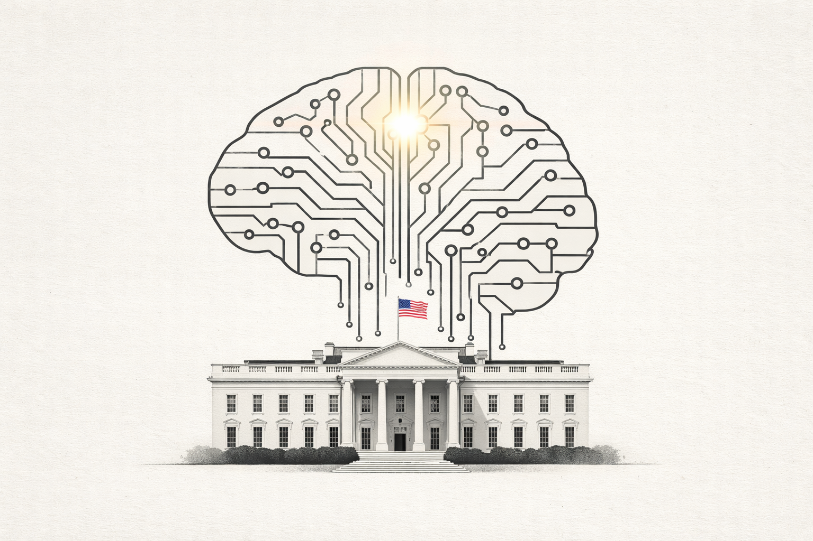

White House Releases a New National AI Policy Framework

Image Source: ChatGPT
In furtherance of a December 2025 Executive Order in which the White House emphasized the importance of a unified federal approach to AI regulation rather than a fragmented, state-level regime, a National AI Policy Framework was issued this March.
Comprising seven parts, the Framework delineates both limitations and priorities for AI governance. On the one hand, it outlines areas in which AI should be constrained, including the protection of children, the safeguarding of American communities, the respect for intellectual property rights, and the preservation of free speech. On the other hand, it identifies where AI should be actively promoted and leveraged, including ensuring continued U.S. leadership in AI, developing an AI-ready workforce, and preempting burdensome state-level regulation.
Interestingly, while the Policy Framework calls on Congress to take action to advance the goals outlined above (including expressly urging the establishment of concrete requirements governing minors’ interactions with AI, measures to combat AI-enabled impersonation scams, support for the deployment of AI tools across American industry through, and mechanisms for redress against censorship), with respect to AI and intellectual property rights, the Framework instead favors resolving such legal questions through the courts rather than through legislation.
Implications/bottom line: Federal AI legislation is likely upcoming, not necessarily in the field of intellectual property.
Source (White House) →